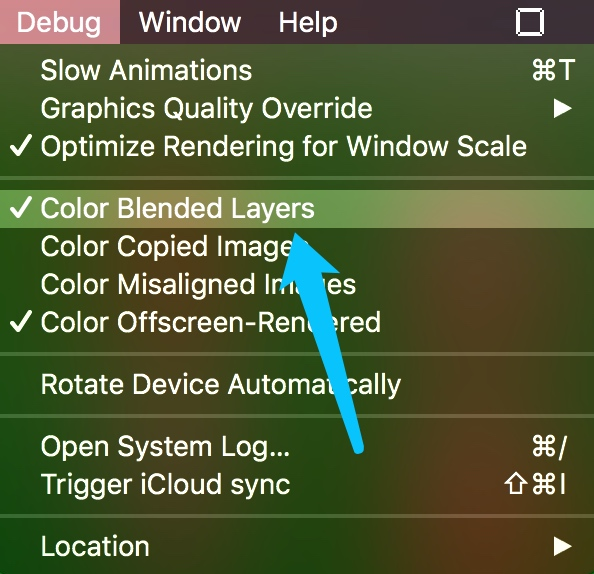
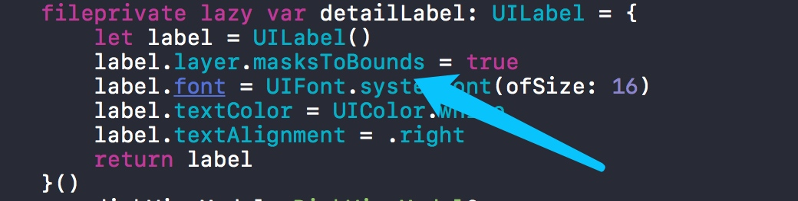

实施反馈项目在iPad 2上比较卡顿,所以要对项目进行优化.
优化集中点为collectionView
项目有两种显示效果,一种是图片模式,一种是纯文字模式. 纯文字模式滑动起来还不错,图片模式就比较卡了.经分析,项目做了部分修改,使滑动效果比较顺畅.
- 栅格化: 目的是离屏渲染,不过还是卡顿
self.layer.shouldRasterize = true
self.layer.rasterizationScale = UIScreen.main.scale
self.layer.drawsAsynchronously = true
- Color Blended Layers 处理

发现部分UILabel存在问题,解决方案:

添加 label.layer.masksToBounds = true,效果还是不行.
- 使用iOS最新的API
UICollectionViewDataSourcePrefetching
extension DishesViewController: UICollectionViewDataSourcePrefetching {
func collectionView(_ collectionView: UICollectionView, prefetchItemsAt indexPaths: [IndexPath]) {
let urls = indexPaths.flatMap { (index) -> URL? in
let big = dishsArray[index.section]
let key = big.keys.first!
let small = big[key]!
let item = small[index.item]
return URL(string: item.dishModel.smallImageUrl)
}
ImagePrefetcher(urls: urls).start()
}
}
- 上面优化后效果不是很明显,最后采取了以空间换时间的方式优化图片列表页
提前用Kingfisher下载图片(这个过程原先就有)下载过图片也做了不再下载的处理,由于图片过多导致不会有太多列表页的图片缓存中内存中. 针对这个问题,我采用了每次进入app就把列表页的图片使用NSCache<NSString, UIImage>缓存起来,效果很明显.
目前还存在问题
下载图片失败率还是很高的,我设置的超时时间为60s downloader.downloadTimeout = 60 但是还是有很多图片下载超时,导致首次加载的时候需要下载图片滑动卡顿.
由于NSCache的特殊性,不能保证图片一直在内存中,正在考虑是否替换成Dictionary,然后自己处理内存警告.这个稍后验证下.